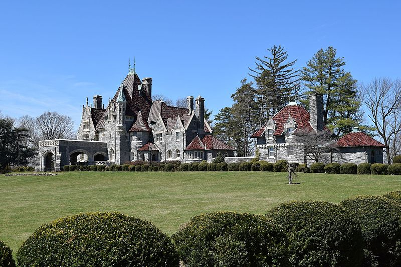

Woodmont (Pennsylvania)
Woodmont ist ein historisch bedeutsames, herrschaftliches Anwesen in Gladwyne im Montgomery County, Pennsylvania. Es ist eine National Historic Landmark und Sitz des Peace Mission Movement von Father Divine.
Baugeschichte
Woodmont, das stark an die Schlösser der Loire erinnert, wurde im Stile der Neorenaissance aus Schiefer und Kalkstein erbaut und das Dach mit Ziegeln und Kupferplatten gedeckt. Das dazugehörige Landgut ist knapp 30 Hektar groß. Der Architekt von Woodmont war William L. Price. Price war später einer der wichtigsten Architekten des American Arts and Crafts Movement. Errichtet wurde Woodmont für den Industriellen und Politiker Alan Wood, der einer Quäker-Familie aus Philadelphia entstammte. Als Vorbild für Woodmont diente Wood und Price Biltmore Estate, das Anwesen für George Washington Vanderbilt II, welches sich seit 1889 im Bau befand. Im Unterschied zu Biltmore Estate und vergleichbaren Anwesen anderer Großindustrieller dieser Zeit entstand Woodmont in Sichtweite seiner Einkommensquelle, indem es auf einem Hügel das Eisenwerk der Alan Wood Iron and Steel Company im Blick hatte. Wood lebte bis zu seinem Tod in Woodmont und verkaufte das Anwesen ein Jahr, bevor er starb, an seinen Neffen Richard G. Wood. Dieser lebte dort bis zum Jahr 1931. Danach erwarb der Anwalt J. Hector McNeal das Hauptgebäude, während ein großer Teil des Grundbesitzes an den Philadelphia Golf Club veräußert wurde.